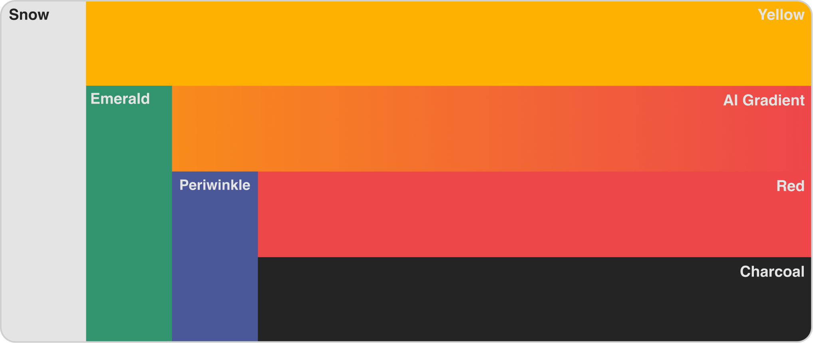
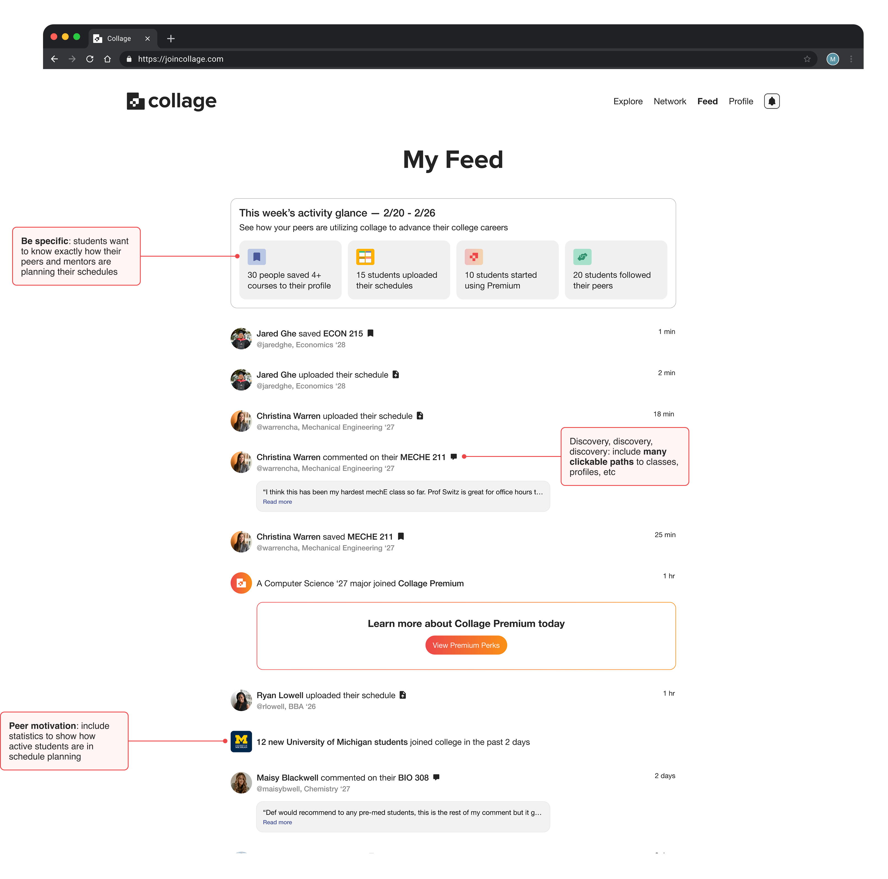

Collage
Ed-tech startup combinding AI college advisor with student networking

OVERVIEW
Collage is an education-technology startup created to help college students improve the otherwise frustrating, unguided scheduling experience. With AI-powered schedule assistance and peer networking, students can share schedules, course reviews, and scheduling advice.
Collage reached 15,000+ students, with 400+ profile creations, and aquired VC interest from Soma Capital, Bullmont, Reach Capital, and more.

THE CHALLENGE
I was contracted by Collage's CEO to build their visual identity and UX design direction. Collage is a feature rich platform, incorporating schedule building assistance and peer networking.
While I am responsible for creating the entirety of Collage's UX, I will keep the case to the visual identity, and core features I am most proud of.
THE GOAL
Equip university students with the accessible guidance and a strong peer network to build optimal schedules and life-long career success.
RESEARCH
We surveyed 100+ college students on their scheduling experience. After synthesizing the results, I drew 3 key pain points reflective of students' struggles.
FEATURE IDEATION
I devised a way to address the discovered pain points within Collage's 3 core features.
This discovery informed the UI design and helped me prioritize which UI elements to focus on for each feature while the dev team built the platform's back-end.
VISUAL IDENTITY
The tone for Collage's branding is nostalgic (yet modern), educational, bold, and playful. Honing in on these sentiments for the company's visual identity, I was able to establish the Collage design language.
Proposed color palette: nostalgic & bright
Logo variations: text based & symbolic
Logo breakdown: incorporating the 'C'ollage C and schedule-reminiscant tiles

Negative space takes up proportionately 1/3 of logo's width & height

Typography guide: Proxima Nova for playful headings & classic Helvetica for readable text

Assets snapshot: vibrant color pops against white-space domininant UI
DESIGN IMPLEMENTATION
Student activity feed:
Keep up with scheduling activity between all of your classmates on Collage.
AI suggested course schedule:
Get AI generated schedule instantly based on resume, transcript, and major/minor.
Peer network page:
Browse other students based on your major/minor to see how they're staying ahead.
REFLECTION
Designing for Collage helped me explore how to best work in an agile, fast-paced start-up environment with a team of developers, product managers, and founders. I'm proud that a design I pioneered garnered provided a more accessible, pragmatic scheduling platform to .
To learn more, check out Collage on and .
*Web app is currently under construction

üîí NeuraFlash / UX Design Internship / 2024 - Present
Pre-sales design that secured $280K deal with Taco Bell